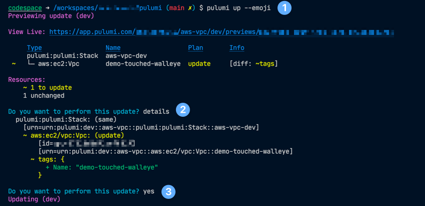

Instead of learning a new domain specific language that wraps up cloud provider API's, this let's the developer use their preferred programming language, while solving several problems that using the API's directly don't solve.
- Ensure the deployment captures a state file of the changes made.
- Workflow around the previews and deployments.
- Easily automated policy checks and tests.
This can be a really useful tool to bring infrastructure code maintainability directly into the the lifecycle of the application.
It's subjective to those in DevOps whether this would also apply for "Day 0-2" type operations, which are typically less frequently changed resources such as account settings, VPC, and other more static resources.
However, with a team experienced with Go or other tooling, I could see that this would provide a way to have much more programmatic control, loops, and other external libraries used, without resorting to the HCL DSL way of doing resource looping and inputs.
First impression was very positive!
Basic steps:
brew install pulumipulumi new aws-go- Entered name of test stack such as
aws-vpc.
- Copied the VPC snippet from their docs and then plugged in my own tag for naming, which by default wasn't included.
- Reproduced the example for
pulumi.String().
package main
import (
"flag"
petname "github.com/dustinkirkland/golang-petname"
"github.com/pulumi/pulumi-aws/sdk/v4/go/aws/ec2"
"github.com/pulumi/pulumi/sdk/v3/go/pulumi/config"
)
var (
words = flag.Int("words", 2, "The number of words in the pet name")
separator = flag.String("separator", "-", "The separator between words in the pet name"))
func main() {
pulumi.Run(func(ctx *pulumi.Context) error {
conf := config.New(ctx, "")
stage := conf.Require("stage")
petname := petname.Generate(*words, *separator)
_, err := ec2.NewVpc(ctx, stage, &ec2.VpcArgs{
CidrBlock: pulumi.String("10.0.0.0/16"),
Tags: pulumi.StringMap{
"Name": pulumi.String(strings.Join([]string{stage, petname}, "-")),
},
})
if err != nil {
return err
}
return nil
})
}
- Running
pulumi destroy left the stack in the console for full plan history and auditing.
To remove the stack from the web you'd run: pulumi stack rm dev.
This is similar to how terraform cloud workspaces work and gives confidence of easier auditing by default.
- The console experience and browser integration was beautifully done.
pulumi preview --emoji provided a very clean and succint summary of changes.pulumi up also was very clean, and allowed a selection to expand the details as well.- Browser for stack provides full metadata detail, resource breakdown, audit history, and more.

-
The Pulumi docs for Azure DevOps were pretty solid!
Full detail and walk through.
As an experienced PowerShell developer, I was pleasantly suprised by quality PowerShell code that overall was structured well.
-
Set some values via yaml easily by: 'pulumi config set --path 'stage' 'dev' which results in:
config:
mystack:stage: dev
aws:region: myregion
This is then read via:
conf := config.New(ctx, "")
stage := conf.Require("stage")
- Missing the benefit of Terraform module registry.
- Pulumi Crosswalk sounds pretty awesome to help with this.
However, I wasn't able to find the equivalent of a "crosswalk module library" to browse so that part might be a future improvement.
This document link: AWS Virtual Private Cloud (VPC) | Pulumi seemed great as a tutorial, but wasn't clear immediately on how I could use with Go.
I looked at the aws · pkg.go.dev but didn't see any equivalent to the documented awsx package shown from nodejs library.
Finally, found my answer.
Pulumi Crosswalk for AWS is currently supported only in Node.js (JavaScript or TypeScript) languages. Support for other languages, including Python, is on the future roadmap. Pulumi Crosswalk for AWS | Pulumi
I wish this was put as a big disclaimer right up at the top of the crosswalk section to ensure it was very clear.